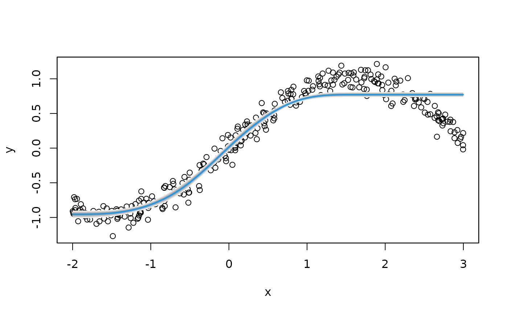

smooth.construct.ms.smooth.spec.RdThe function sets up a smooth term for shape constraint estimation of P-spline model terms. Note that this currently only works using boosting and backfitting.
# S3 method for ms.smooth.spec
smooth.construct(object, data, knots, ...)Either a smooth specification object, or object of class "bamlss",
"bamlss.frame", "bamlss.formula" or "bamlss.terms". For smooth
specification objects, see function smooth.construct.
A data frame or list, see also see function smooth.construct.
See function smooth.construct.
Arguments passed to the smooth term constructor functions.
See function see smooth.construct.
if (FALSE) ## Generate some data.
set.seed(123)
n <- 300
x <- runif(n, -2, 3)
y <- sin(x) + rnorm(n, sd = 0.1)
d <- data.frame("y" = y, "x" = x)
## Increasing: constr = 1.
## Decreasing: constr = 2.
b <- bamlss(y ~ s2(x,bs="ms",xt=list(constr=1)),
data = d, optimizer = opt_bfit, sampler = sam_MVNORM)
#> AICc 160.7101 logPost -94.9489 logLik -75.1264 edf 5.1219 eps 0.8913 iteration 1
#> AICc -6.5555 logPost -11.0618 logLik 8.8436 edf 5.4463 eps 0.1834 iteration 2
#> AICc -75.1945 logPost 23.4106 logLik 43.4027 edf 5.6763 eps 0.1043 iteration 3
#> AICc -84.3641 logPost 28.0615 logLik 48.1083 edf 5.7921 eps 0.0406 iteration 4
#> AICc -84.4774 logPost 28.1376 logLik 48.2034 edf 5.8289 eps 0.0061 iteration 5
#> AICc -84.4729 logPost 28.1377 logLik 48.2058 edf 5.8334 eps 0.0002 iteration 6
#> AICc -84.4728 logPost 28.1377 logLik 48.2059 edf 5.8335 eps 0.0000 iteration 7
#> AICc -84.4728 logPost 28.1377 logLik 48.2059 edf 5.8335 eps 0.0000 iteration 7
#> elapsed time: 0.04sec
#>
#> Warning: sigma is numerically not positive semidefinite
## Predict and plot.
p <- predict(b, model = "mu", FUN = c95)
plot(y ~ x)
plot2d(p ~ x, add = TRUE, col.lines = 4, lwd = 2)
